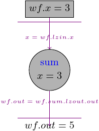
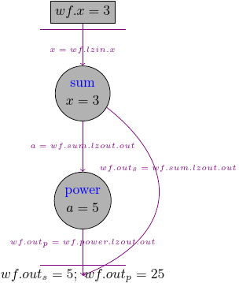
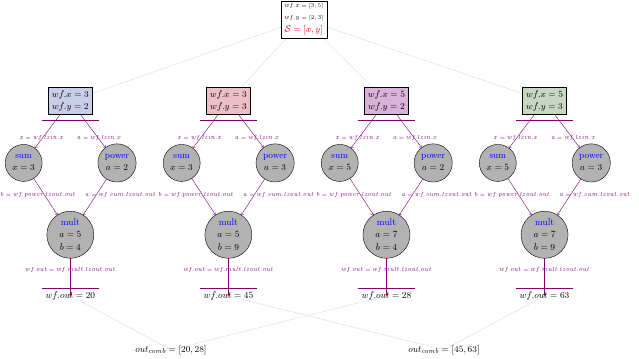
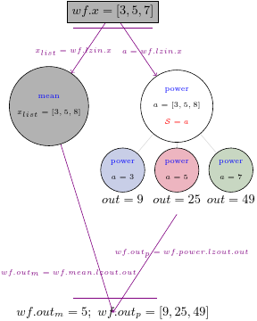

4. Workflow
Contents
4. Workflow¶
import nest_asyncio
nest_asyncio.apply()
import pydra
# functions used later in the notebook:
@pydra.mark.task
def add_two(x):
return x + 2
@pydra.mark.task
def power(a, n=2):
return a**n
@pydra.mark.task
def mult_var(a, b):
return a * b
In order to run multiple tasks within one pipeline, we use another pydra class - Workflow. The workflow will contain arbitrary number of tasks that will be treated as a graph.
Let’s start from a workflow with a single task that has one input x. When we create a Workflow, we have to specify input_spec that contains all of the workflow inputs:
wf1 = pydra.Workflow(name="wf1", input_spec=["x"], x=3)
Now, we can add a task and specify that x will be taken from the workflow input by using so-called Lazy Input, x=wf1.lzin.x. We should also add the name to the task we are using in the Workflow.
wf1.add(add_two(name="sum", x=wf1.lzin.x))
<pydra.engine.core.Workflow at 0x7fd750605ad0>
Now, we can access the task by using the task name:
wf1.sum
<pydra.engine.task.FunctionTask at 0x7fd770627a90>
We have to also specify what would be the workflow output, for this one-task workflow, we simply take the output of sum and we use Lazy Output to set it to wf.output.out:
wf1.set_output([("out", wf1.sum.lzout.out)])
We could also use dictionary to set the output - wf1.set_output({"out": wf1.sum.lzout.out}), or as a tuple if we set a single element: wf1.set_output(("out", wf1.sum.lzout.out))
Now, we are ready to run the workflow:
with pydra.Submitter(plugin="cf") as sub:
sub(wf1)
wf1.result()
Result(output=Output(out=5), runtime=None, errored=False)
The result of the workflow should be the same as the output of the task, i.e., 5.
We could think about the workflow as follows: the workflow has an input x that is passed to the “sum” Task, once the task has its input it runs and produces an output, the output is later set to the workflow output.

You can add as many tasks as you want to the workflow and return multiple variables:
wf2 = pydra.Workflow(name="wf2", input_spec=["x"], x=3)
wf2.add(add_two(name="add_two", x=wf2.lzin.x))
wf2.add(power(name="power", a=wf2.lzin.x))
# setting multiple workflow output
wf2.set_output([("out_s", wf2.add_two.lzout.out),
("out_p", wf2.power.lzout.out)
])
with pydra.Submitter(plugin="cf") as sub:
sub(wf2)
wf2.result()
Result(output=Output(out_s=5, out_p=9), runtime=None, errored=False)
In this example we had two tasks, that took inputs from the workflow input and pass the outputs to the workflow output:

Connecting tasks¶
The previous example showed a workflow with two nodes, but they were not connected with each other.
If we want to connect the tasks with each other, we have to set the input of the second task to the output of the first task, and we use again the Lazy Output concept:
wf3 = pydra.Workflow(name="wf3", input_spec=["x"], x=3)
wf3.add(add_two(name="sum", x=wf3.lzin.x))
# by setting a=wf3.sum.lzout.out we create a connection
wf3.add(power(name="power", a=wf3.sum.lzout.out))
wf3.set_output([("out_s", wf3.sum.lzout.out),
("out_p", wf3.power.lzout.out)
])
with pydra.Submitter(plugin="cf") as sub:
sub(wf3)
wf3.result()
Result(output=Output(out_s=5, out_p=25), runtime=None, errored=False)
Now, we could see that the second task took an input from the first one:
wf3.power.inputs.a
LF('sum', 'out')
So this time the workflow graph will look like this:

The node can be connected to multiple nodes, we can modify wf to add additional node that uses mult_var to multiple the outputs of two previous tasks:
wf4 = pydra.Workflow(name="wf4", input_spec=["x"], x=3)
wf4.add(add_two(name="add_two", x=wf4.lzin.x))
wf4.add(power(name="power", a=wf4.lzin.x))
wf4.add(mult_var(name="mult", a=wf4.add_two.lzout.out, b=wf4.power.lzout.out))
wf4.set_output([("out", wf4.mult.lzout.out)])
with pydra.Submitter(plugin="cf") as sub:
sub(wf4)
wf4.result()
Result(output=Output(out=45), runtime=None, errored=False)
This time the graph should look like this:

Workflow as a node¶
Previously we had workflows that had Tasks as nodes, but pydra treats Workflow as any other Task, so the workflow could be used as a node.
Let’s modify the previous workflow, and instead of sum and power tasks we use wf2 as the first node:
wf2a = pydra.Workflow(name="wf2a", input_spec=["x"])
wf2a.add(add_two(name="add_two", x=wf2a.lzin.x))
wf2a.add(power(name="power", a=wf2a.lzin.x))
wf2a.set_output([("out_s", wf2a.add_two.lzout.out),
("out_p", wf2a.power.lzout.out)
])
wf5 = pydra.Workflow(name="wf5", input_spec=["x"], x=3)
wf5.add(wf2a)
# connecting wfa to the input from the main workflow
wf2a.inputs.x = wf5.lzin.x
wf5.add(mult_var(name="mult", a=wf5.wf2a.lzout.out_s, b=wf5.wf2a.lzout.out_p))
wf5.set_output([("out", wf5.mult.lzout.out)])
with pydra.Submitter(plugin="cf") as sub:
sub(wf5)
wf5.result()
Result(output=Output(out=45), runtime=None, errored=False)
We should get exactly the same result as previously, but this time we run wf2a inside our main workflow:

Workflow with a splitter¶
Workflow as any other task could also have a splitter. Let’s take one of our previous workflows and add a splitter for the workflow input by setting splitter using the split method.
wf6 = pydra.Workflow(name="wf6", input_spec=["x"])
# setting a plitter for the entire workflow
wf6.split("x", x=[3, 5])
wf6.add(add_two(name="add_two", x=wf6.lzin.x))
wf6.add(power(name="power", a=wf6.lzin.x))
wf6.add(mult_var(name="mult", a=wf6.add_two.lzout.out, b=wf6.power.lzout.out))
wf6.set_output([("wf_out", wf6.mult.lzout.out)])
with pydra.Submitter(plugin="cf") as sub:
sub(wf6)
wf6.result()
[Result(output=Output(wf_out=45), runtime=None, errored=False),
Result(output=Output(wf_out=175), runtime=None, errored=False)]
As we could expect, we received a list with two Results, one is for wf.x=3, and the other is for wf.x=5.
Behind the scene pydra expanded two workflows for two values of the workflow input:

Let’s create a new workflow that has two inputs and more complicated splitter.
wf7 = pydra.Workflow(name="wf7", input_spec=["x", "y"])
wf7.split(["x", "y"], x=[3, 5], y=[2, 3])
wf7.add(add_two(name="sum", x=wf7.lzin.x))
wf7.add(power(name="power", a=wf7.lzin.y))
wf7.add(mult_var(name="mult", a=wf7.sum.lzout.out, b=wf7.power.lzout.out))
wf7.set_output([("out", wf7.mult.lzout.out)])
with pydra.Submitter(plugin="cf") as sub:
sub(wf7)
wf7.result()
[Result(output=Output(out=20), runtime=None, errored=False),
Result(output=Output(out=45), runtime=None, errored=False),
Result(output=Output(out=28), runtime=None, errored=False),
Result(output=Output(out=63), runtime=None, errored=False)]
We should have four results for four sets of inputs, and the graph should look like this:

Adding a combiner¶
In the same way as we did for Task, we can add a combiner to the entire workflow:
wf7.combine("x")
with pydra.Submitter(plugin="cf") as sub:
sub(wf7)
wf7.result()
[[Result(output=Output(out=20), runtime=None, errored=False),
Result(output=Output(out=28), runtime=None, errored=False)],
[Result(output=Output(out=45), runtime=None, errored=False),
Result(output=Output(out=63), runtime=None, errored=False)]]
Now we should have two lists in the results, one for y=2 and one for y=3:

Setting a splitter for nodes¶
We presented how to set a splitter and a combiner for entire workflow, but we could also set a splitter and a combiner on the level of a single node.
Let’s create a workflow that takes a list as an input, and pass this input to two nodes. One node can take entire list as its input and the second node splits the input:
@pydra.mark.task
def mean(x_list):
return sum(x_list)/len(x_list)
wf8 = pydra.Workflow(name="wf8", input_spec=["x"], x=[3, 5, 7])
wf8.add(mean(name="mean", x_list=wf8.lzin.x))
# adding a task that has its own splitter
wf8.add(power(name="power", a=wf8.lzin.x).split("a"))
wf8.set_output([("out_m", wf8.mean.lzout.out),
("out_p", wf8.power.lzout.out)])
with pydra.Submitter(plugin="cf") as sub:
sub(wf8)
wf8.result()
Result(output=Output(out_m=5.0, out_p=[9, 25, 49]), runtime=None, errored=False)
This time we have in the workflow output a single value from the mean task and three values from the power task. The graph should look like this:
